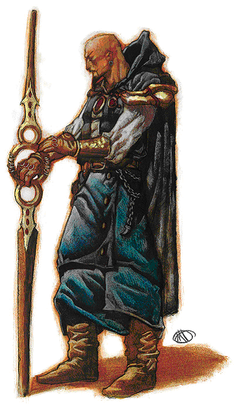

Mordenkainen魔邓肯
人类男性
力量10，敏捷17，体质18，智力27，知觉15，魅力18；
27级法师；总级别27；挑战级别27；
中等体型类人生物（人类）。生命骰27d4+108；生命值175；
优先加权值＋8；
速度30尺；
防护等级28（接触18，措手不及25），附带传奇法师护甲防护等级48（接触18，措手不及45）；
攻击附加值＋19/＋14近身（1d6+5附带1d6火系伤害，＋5炽热力量之杖）或＋17/＋12远程接触（通过法术）；
阵营中立；豁免判定：坚忍＋16，反射＋15，意志＋20；身高6尺2寸。
技能与特技：
alchemy炼金术＋38，bluff欺诈+11，concentration集中精神＋31，diplomacy交际＋18，knowledge(arcana)知识（奥术）＋38，knowledge(the planes)知识（位面）＋23，knowledge(religion)知识（宗教）＋23，scry占卜＋27，sense motive察觉动机＋9，spellcraft法术知能＋38；
craft staff制造法杖，craft wondrous item制造玄奇物品，heighten spell增强法术，improved initiative优先改善，improve spell capacity（10th）提升法术能力（10级），improve spell capacity（11th）提升法术能力（11级），improve spell capacity（12th）提升法术能力（12级），maximize spell极效法术，scribe scroll撰写卷轴，great fortitude增强坚忍,combat casting战斗施法,brew potion配制药剂,lightning reflexes闪电反射,quick spell快速施法,spell penetration法术穿透,improved metamagic增强改变魔法,epic spellcasting传奇施法,epic spell penetration传奇法术穿透。
每日可用法师法术：4/6/6/12/6/5/5/5/5/4/1/1/1。基本困难等级＝18＋法术等级。
持有物品：
+5staffof fiery power 炽热力量之杖
bracers of armor+8 防御护腕＋8
headband of intellect+6 智力头巾+6
rod of absorption 吸收魔棒
pink Ioun stone 粉红Ioun之石
carpet of flying（6ft by 9ft） 飞毯（6尺*9尺）
amulet of natural armor+2 天然装甲护身符+2
wand of fireball(10th-level caster) 火球魔杖（相当与10级施法者）
ring of protection+5 防护戒指+5
ring of wizardry III 巫师之戒3型
crystal ball 结晶之球
silver key of portals 传送门的银钥匙
silver key of portals传送门的银钥匙（小型宝物Minor Artifact）：
这是一把银色骷髅型钥匙，一件Dalt神的遗物。作为一件开锁器，它可以打开栅栏，门，锁，盖子和传送通道。这把钥匙可以自动解除30级以下施法者所施展的hold portal锁定传送门和arcane lock奥术之锁。拥有这把钥匙的人可以获得+30的发现脱逃宝物的奖励，同时每天可以使用以下法术总共两次：passwall穿墙，ethereal jaunt飘移，word of recall归还之言。这些法术等同一个30级的施法者所施展的。
魔邓肯是法拉尼斯（Flanaess）活着的法师中最令人敬畏的一个。几乎没有施法者未曾有听说过他在魔法领域里的惊人造诣，而他在魔法和政治领域里的技能和学识更是广为人知。事实上，绝大多数法师都学过至少一个由魔邓肯发明的法术。现在，魔邓肯领导着一个被称作八叶（the Circle of Eight)的强大法师组织，确保不会有势力在弗拉那斯获得绝对的统治优势，而这种平衡将在整个东艾里科（Eastern Oerik)维持下去.
魔邓肯的身体状况很好。他通常留着整齐的黑色胡须，光头，喜欢穿黑色天鹅绒（雷斯林。。。）外套。他看上去大约40岁左右（事实上他的年纪要两倍于此）。他敏锐的目光中时常流露出天才而疯狂的目光。很少有人会在看到他充满力量的凝视和听到他富有说服力的讲演之后不被他所折服。
魔邓肯认为他自己的使命就是维持伟大的平衡(Great Balance)。他的哲学理论远比简单的平衡要复杂--她们极其详细、细致，是在数十年的奥术研究中形成的理想。魔邓肯曾非常热心的与他的私人军队-- 黑曜石基地--一起为正义力量而战（最近一次是在灰鹰战争（the Greyhawk War)中),但他同样经常为恶魔势力作战--事实上这两者的时间几乎相等。他选择在两个阵营间摇摆，操纵着各种事件使得不会有某一方过于强大。其结果就是，这个法师变得不可信任，即使是对同样信仰德鲁依教的卡巴尔（Cabal)的圣者们(Hierophants)也是如此，他们发觉他对平衡的梦想完全是以自我为中心，甚至可以说是随心所欲的。另一些人则视他为彻底的敌人，他们包括Evard the Black,Terik和Rary.